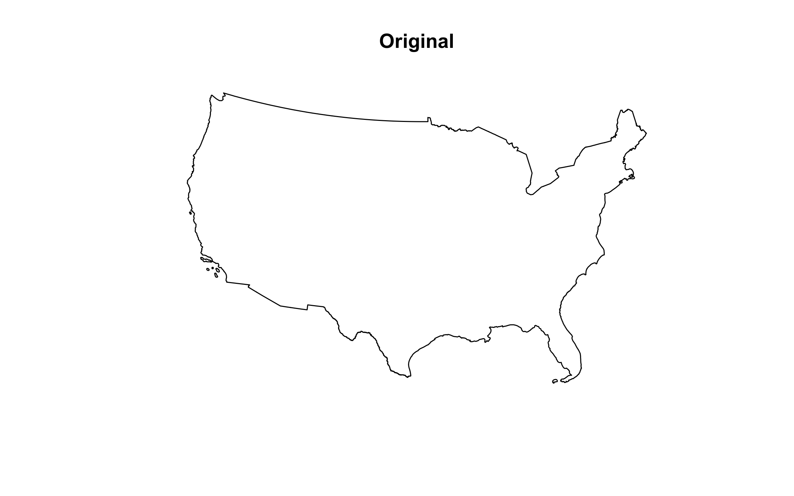
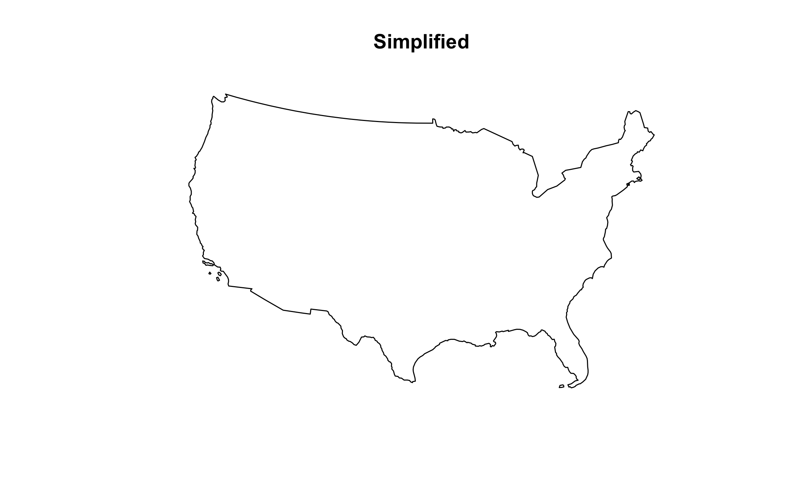
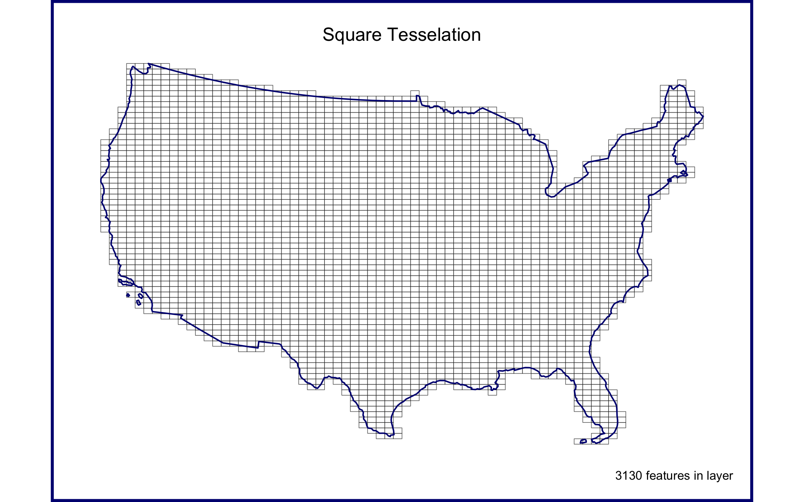
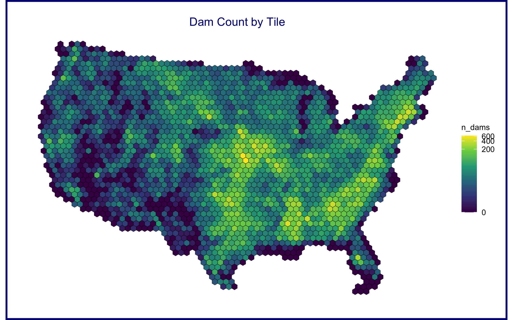
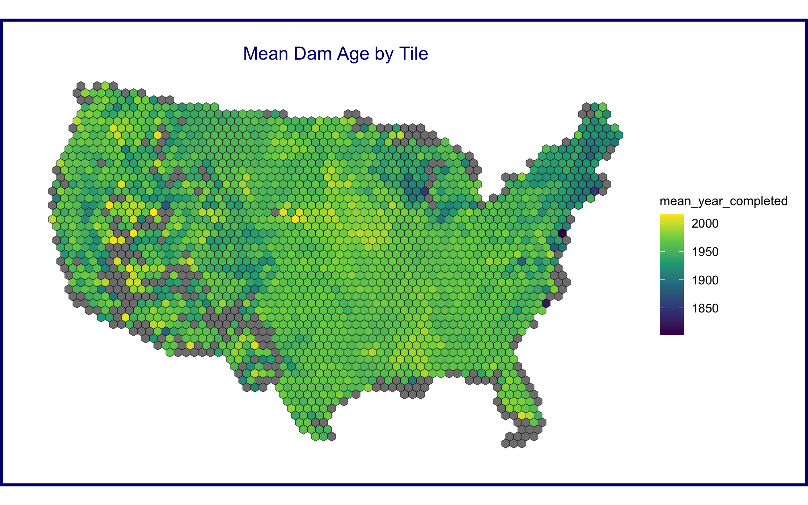
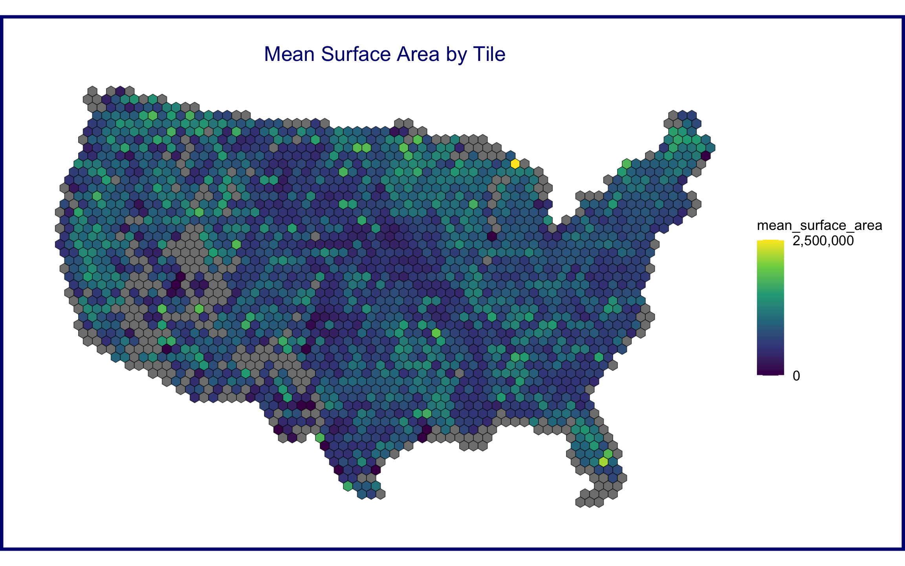
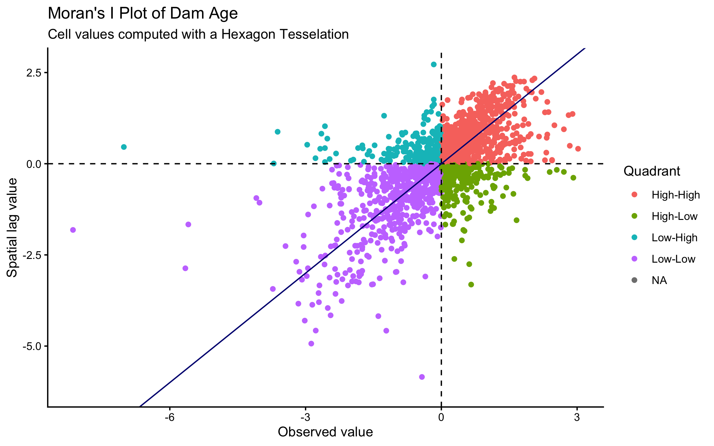
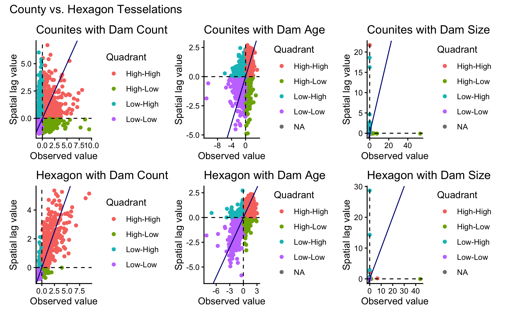

MAUP in Practice: Tessellations and Point-in-Polygon
National Dam Inventory: from counts to local clustering
Background
This investigation explores the impacts of tessellated surfaces and the modifiable areal unit problem (MAUP) using the National Dam Inventory maintained by the United States Army Corps of Engineers. The work requires writing reusable functions and careful consideration of feature aggregation and simplification, spatial joins, and data visualization. The end goal is to visualize the distribution of dams and their purposes across the country.
The analysis covers four main skills: tessellating surfaces to discretize space, geometry simplification to expedite expensive intersections, writing functions to automate repetitive reporting and mapping tasks, and point-in-polygon counts to aggregate point data.
Preparing Tessellated Surfaces
This first part prepares five tessellated surfaces from CONUS and writes a function to plot them in a descriptive way.
1.1 Define a Projection
First, a spatial file of CONUS counties. For future area calculations these are wanted in an equal area projection (EPSG:5070), so an sf object of US counties is pulled with AOI::aoi_get() and transformed to EPSG:5070.
Code
us_counties <- AOI::aoi_get(state = "conus", county = "all") %>%
st_transform(crs = "EPSG:5070")
head(us_counties)Simple feature collection with 6 features and 14 fields
Geometry type: MULTIPOLYGON
Dimension: XY
Bounding box: xmin: 760612 ymin: 817718 xmax: 1027299 ymax: 1287809
Projected CRS: NAD83 / Conus Albers
state_region state_division feature_code state_name state_abbr name
1 3 6 0161526 Alabama AL Autauga
2 3 6 0161527 Alabama AL Baldwin
3 3 6 0161528 Alabama AL Barbour
4 3 6 0161529 Alabama AL Bibb
5 3 6 0161530 Alabama AL Blount
6 3 6 0161531 Alabama AL Bullock
fip_class tiger_class combined_area_code metropolitan_area_code
1 H1 G4020 388 <NA>
2 H1 G4020 380 <NA>
3 H1 G4020 NA <NA>
4 H1 G4020 142 <NA>
5 H1 G4020 142 <NA>
6 H1 G4020 NA <NA>
functional_status land_area water_area fip_code
1 A 1539634184 25674812 01001
2 A 4117656514 1132955729 01003
3 A 2292160149 50523213 01005
4 A 1612188717 9572303 01007
5 A 1670259090 14860281 01009
6 A 1613083467 6030667 01011
geometry
1 MULTIPOLYGON (((858778.6 10...
2 MULTIPOLYGON (((798890.8 91...
3 MULTIPOLYGON (((997958.5 10...
4 MULTIPOLYGON (((834517.5 11...
5 MULTIPOLYGON (((865138.9 12...
6 MULTIPOLYGON (((972148.2 10...Code
# st_crs(us_counties)1.2 County Centroids as Anchors
Triangle-based tessellations need point locations to serve as “anchors”. County centroids are generated with st_centroid, and since we can only tessellate over a single feature, the resulting 3,108 POINT features are unioned into a single MULTIPOINT feature. For point objects, the difference between union and combine is moot.
Code
counties_cent <- st_centroid(us_counties) %>%
st_union()
ggplot() +
geom_sf(data = us_counties, fill = NA)+
geom_sf(data = counties_cent)+
theme_void()
1.3 Four Tessellations
Tessellations and coverages describe the extent of a region with geometric shapes, called tiles, with no overlaps or gaps. Tiles can range in size, shape, and area, and have different methods for being created. Some methods generate triangular tiles across a set of defined points (Voronoi and Delaunay triangulation), while others generate equal area tiles over a known extent (st_make_grid).
This analysis creates surfaces of CONUS using four methods, two based on point anchors and two based on an extent: a Voronoi tessellation (st_voronoi) and an unconstrained triangulation (st_triangulate) over the county centroids, and a square grid and a hexagonal grid (st_make_grid, with square = FALSE for hexagons) each with n = 70 over the counties object.
Each tile gets an ID via a new column spanning 1:n(). Since all tessellation methods return an sfc GEOMETRYCOLLECTION, the result is coerced to an sf object with st_as_sf before adding attributes. Finally, each surface is passed through st_cast to ensure it is topologically valid and simple, which avoids unexpected “TopologyException” errors downstream.
Code
voroni <- st_voronoi(counties_cent) %>%
st_cast() %>%
st_as_sf() %>%
mutate(id = 1:n())
triangle <- st_triangulate(counties_cent) %>%
st_cast() %>%
st_as_sf() %>%
mutate(id = 1:n())
square <- st_make_grid(us_counties, n = 70) %>%
st_cast() %>%
st_as_sf() %>%
mutate(id = 1:n())
hex <- st_make_grid(us_counties, n = 70, square = FALSE) %>%
st_cast() %>%
st_as_sf() %>%
mutate(id = 1:n())
# plot(hex)1.4 Clipping to CONUS
Plotting the tessellations shows that the Voronoi, Delaunay triangulation, hexagon, and square grids all produce regions far beyond the boundaries of CONUS, so these have to be cut to the CONUS border. Two approaches are needed: st_intersection() for Voronoi and Delaunay, which extend far beyond the study area and need to be clipped at the exact boundary, and st_filter() for the hexagon and square grids, which are regular grids already designed to fit and only need edge tiles discarded. Either way, a geometry of CONUS is needed as the clipping feature, obtained by unioning the existing county boundaries.
Code
# create a U.S. border object to trip tesselations
conus <- st_union(us_counties)With a single-feature boundary, the complexity of the geometry matters: the more points a geometry contains, the more computation is needed for spatial predicates and differencing, and a task like this one does not need a finely resolved coastal border. The unioned border is simplified with the Visvalingam algorithm via rmapshaper::ms_simplify, choosing the keep percentage that retains the highest number of vertices while still giving a shape comfortable for the analysis.
Code
# simplify to remove 95% of points, visually inspected and minimal loss of detail. Level of simplification will be sufficient for my analysis
simple_conus <- rmapshaper::ms_simplify(conus, keep = 0.05)
st_crs(simple_conus)Coordinate Reference System:
User input: EPSG:5070
wkt:
PROJCRS["NAD83 / Conus Albers",
BASEGEOGCRS["NAD83",
DATUM["North American Datum 1983",
ELLIPSOID["GRS 1980",6378137,298.257222101,
LENGTHUNIT["metre",1]]],
PRIMEM["Greenwich",0,
ANGLEUNIT["degree",0.0174532925199433]],
ID["EPSG",4269]],
CONVERSION["Conus Albers",
METHOD["Albers Equal Area",
ID["EPSG",9822]],
PARAMETER["Latitude of false origin",23,
ANGLEUNIT["degree",0.0174532925199433],
ID["EPSG",8821]],
PARAMETER["Longitude of false origin",-96,
ANGLEUNIT["degree",0.0174532925199433],
ID["EPSG",8822]],
PARAMETER["Latitude of 1st standard parallel",29.5,
ANGLEUNIT["degree",0.0174532925199433],
ID["EPSG",8823]],
PARAMETER["Latitude of 2nd standard parallel",45.5,
ANGLEUNIT["degree",0.0174532925199433],
ID["EPSG",8824]],
PARAMETER["Easting at false origin",0,
LENGTHUNIT["metre",1],
ID["EPSG",8826]],
PARAMETER["Northing at false origin",0,
LENGTHUNIT["metre",1],
ID["EPSG",8827]]],
CS[Cartesian,2],
AXIS["easting (X)",east,
ORDER[1],
LENGTHUNIT["metre",1]],
AXIS["northing (Y)",north,
ORDER[2],
LENGTHUNIT["metre",1]],
USAGE[
SCOPE["Data analysis and small scale data presentation for contiguous lower 48 states."],
AREA["United States (USA) - CONUS onshore - Alabama; Arizona; Arkansas; California; Colorado; Connecticut; Delaware; Florida; Georgia; Idaho; Illinois; Indiana; Iowa; Kansas; Kentucky; Louisiana; Maine; Maryland; Massachusetts; Michigan; Minnesota; Mississippi; Missouri; Montana; Nebraska; Nevada; New Hampshire; New Jersey; New Mexico; New York; North Carolina; North Dakota; Ohio; Oklahoma; Oregon; Pennsylvania; Rhode Island; South Carolina; South Dakota; Tennessee; Texas; Utah; Vermont; Virginia; Washington; West Virginia; Wisconsin; Wyoming."],
BBOX[24.41,-124.79,49.38,-66.91]],
ID["EPSG",5070]]Code
# plot(simple_conus)After simplification, the boundary is checked to confirm it is still valid and still covers all of CONUS.
Code
# Check the simplified boundary valid
st_is_valid(simple_conus)[1] TRUECode
# Check: Does it still contain all of CONUS?
st_bbox(simple_conus) # Should cover roughly [-125, 24] to [-66, 49] xmin ymin xmax ymax
-2360167.5 259157.7 2263786.2 3177425.2 Code
# Visual comparison
plot(conus, main = "Original")
Code
plot(simple_conus, main = "Simplified")
NoteSimplification: Boundary Only, Not Tessellation
This step simplifies the CONUS boundary container used for clipping the tessellated surfaces. Simplification affects only the geometry of the clipping operation; it speeds up the intersection computation by reducing boundary vertices. The tessellation tiles themselves remain high-resolution and unchanged.
The mapview::npts function reports the number of points in the original and simplified objects, so the reduction can be quantified.
Code
print(paste(round((1 - (mapview::npts(simple_conus) / mapview::npts(conus))) *100, 1), "percent of points removed by simplification"))[1] "94.9 percent of points removed by simplification"Removing 95% of points greatly decreases computation time for operations involving the border. With the boundary simplified, all four grids are cropped to CONUS using the two methods described above: st_intersection() cuts the Voronoi and Delaunay geometries at the exact boundary, while st_filter() keeps only the hexagon and square tiles that touch CONUS without modifying them. The compare_speed function below reports how much simplification sped up each operation.
Code
# Intersection to clip triangle and vironi to exact border
voroni_trim <- st_intersection(voroni, simple_conus)
# compare run time with different geom
system.time(st_intersection(voroni, conus)) user system elapsed
0.757 0.025 0.782 Code
system.time(st_intersection(voroni, simple_conus)) user system elapsed
0.095 0.000 0.096 Code
triangle_trim <- st_intersection(triangle, simple_conus)
# function for evlauting compute times
compare_speed <- function(task1, task2, task1_label = "Task 1", task2_label = "Task 2") {
time1 <- system.time(task1)
time2 <- system.time(task2)
pct_decrease <- round((1 - (time2["elapsed"] / time1["elapsed"])) * 100, 1)
cat("Task 1 (", task1_label, "):", time1["elapsed"], "sec\n")
cat("Task 2 (", task2_label, "):", time2["elapsed"], "sec\n")
cat(pct_decrease, "percent change in operation speed\n")
invisible(list(task1 = time1, task2 = time2, pct_decrease = pct_decrease))
}
compare_speed(st_intersection(triangle, simple_conus), st_intersection(triangle,conus),
task1_label = "simple", task2_label = "complex")Task 1 ( simple ): 0.176 sec
Task 2 ( complex ): 1.594 sec
-805.7 percent change in operation speedCode
# Use st_filter with intersect predicate maintains individual cells that have a portion of their geometry wihtin the border
square_trim <- st_filter(square, simple_conus)
hex_trim <- st_filter(hex, simple_conus)
compare_speed(st_filter(hex, simple_conus), st_filter(hex, conus))Task 1 ( Task 1 ): 0.036 sec
Task 2 ( Task 2 ): 0.337 sec
-836.1 percent change in operation speedThe st_intersection() on Voronoi and Delaunay produces edges that align precisely with the CONUS border, cutting edge tiles rather than discarding them, which is geometrically accurate but creates irregular edge shapes. The st_filter() on the hexagon and square grids keeps only complete regular tiles that touch CONUS, giving a stair-step boundary that follows the grid. As a result, the Voronoi and Delaunay tessellations have denser tile coverage than the hexagons and squares, which affects spatial statistics: denser tessellations reveal finer-grained patterns while coarser tessellations show broader regional structure. This is part of the Modifiable Areal Unit Problem (MAUP).
1.5 A Plotting Function
Rather than writing out five separate ggplots, a function takes an sf object as arg1 and a character string as arg2 and returns a ggplot object showing arg1 titled with arg2. The function enforces a white fill, a navy border, a size of 0.2, theme_void, and a caption reporting the number of features in arg1.
Code
make_map <- function(sf_obj, title) {
plot <- ggplot(data = sf_obj)+
geom_sf(fill = "white", size = 0.2)+
geom_sf(data = simple_conus, color = "navy", size = 0.5, fill = NA) +
theme_void()+
labs(title = title,
caption = paste(nrow(sf_obj), "features in layer"))+
theme(plot.background = element_rect(colour = "navy", fill = NA, linewidth = 2),
plot.margin = margin(t = 0.5, r = 0.5, b = 0.5, l = 0.5, unit = "cm"),
plot.title = element_text(hjust = .5))
return(plot)
}The function then plots each of the tessellated surfaces and the original county data, five plots in total.
Code
make_map(us_counties, "U.S. Counties")
Code
make_map(voroni_trim, "Voroni Tesselation")
Code
make_map(triangle_trim, "Triangle Tesselation")
Code
make_map(square_trim, "Square Tesselation")
Code
make_map(hex_trim, "Hexagon Tesselation")
Summarizing the Surfaces
This part writes a function to summarize the tessellated surfaces. The function takes an sf object and a character string and returns a data.frame. Inside, it calculates the area of the object, converts the units to km², and drops the units, then builds a data.frame with the description text, the number of features, the mean feature area (km²), the standard deviation of feature area, and the total area (km²).
Code
sum_tess <- function(sf_obj, description) {
area_km2 <- sf_obj %>%
st_area() %>%
units::set_units(km^2) %>%
units::drop_units()
df <- data.frame(
description = description,
n_features = nrow(sf_obj),
mean_area_km2 = mean(area_km2),
sd_area_km2 = sd(area_km2),
total_area_km2 = sum(area_km2)
)
return(df)
}The function summarizes each tessellation and the original counties.
Code
sum_tess(voroni_trim, "Voroni Tesselation") description n_features mean_area_km2 sd_area_km2 total_area_km2
1 Voroni Tesselation 3108 2604.426 2917.817 8094557Code
sum_tess(triangle_trim, "Triangle Tesselation") description n_features mean_area_km2 sd_area_km2 total_area_km2
1 Triangle Tesselation 6198 1290.368 1598.403 7997700Code
sum_tess(square_trim, "Square Tesselation") description n_features mean_area_km2 sd_area_km2 total_area_km2
1 Square Tesselation 3130 2761.289 1.182351e-11 8642833Code
sum_tess(hex_trim, "Hexagon Tesselation") description n_features mean_area_km2 sd_area_km2 total_area_km2
1 Hexagon Tesselation 2308 3781.179 1.813753e-11 8726961Multiple data.frame objects can be bound row-wise with bind_rows into a single data.frame, combining the summaries of all five surfaces.
Code
tess_comp <- bind_rows(
sum_tess(voroni_trim, "Voroni Tesselation"),
sum_tess(triangle_trim, "Triangle Tesselation"),
sum_tess(square_trim, "Square Tesselation"),
sum_tess(hex_trim, "Hexagon Tesselation"),
sum_tess(us_counties, "Counties Tesselation")
)With the five summaries bound (two tessellations, two coverages, and the raw counties), the combined data.frame prints as a formatted table.
Tesselation | N features | Mean area (km2) | SD area (km2) | Total area (km2) |
|---|---|---|---|---|
Voroni Tesselation | 3,108 | 2,604.4 | 2,917.8 | 8,094,557 |
Triangle Tesselation | 6,198 | 1,290.4 | 1,598.4 | 7,997,700 |
Square Tesselation | 3,130 | 2,761.3 | 0.0 | 8,642,833 |
Hexagon Tesselation | 2,308 | 3,781.2 | 0.0 | 8,726,961 |
Counties Tesselation | 3,108 | 2,605.1 | 3,443.7 | 8,096,496 |
The traits of each tessellation have specific implications for a point-in-polygon analysis, both in terms of the MAUP and computational requirements. The hexagon and square tessellations both have a standard area per unit, with the hexagon tessellation having the largest mean cell area and the squares having the second-largest. As random and consistently sized cells, summaries of features within these cells can be treated as spatial densities. The triangular and Voronoi tessellations rely on artificially constructed county centroids and vary in size. Because county boundaries have little relation to dams, which are usually constructed at the state or federal level, there is little validity in using these tessellation styles for a national inventory of dam features. Although the square tessellation technically provides higher spatial resolution, distances are biased along the diagonals compared to hexagons, and neighbor definitions are less clear with a square grid. Regarding the MAUP, this analysis is best suited to density metrics, so a standardized unit tessellation is preferred, and local administrative boundaries at the county level are not a concern here.
Dam Distribution and Tessellation Selection
The data analyzed here are from the U.S. Army Corps of Engineers National Dam Inventory (NID). This dataset documents roughly 91,000 dams in the United States and includes attributes such as design specifications, risk level, age, and purpose.
Dam management agencies face a critical question: where are dams actually clustered, and how do you visualize that clustering in a way that supports infrastructure planning decisions? The answer depends on the choice of geographic boundaries, that is, the tessellation. Different tessellations reveal different patterns of dam concentration. This part quantifies dam distributions across multiple tessellation methods, examines how the MAUP creates different narratives from the same underlying data, and selects and justifies the tessellation that best supports management decisions about dam clustering. The remainder of the analysis uses point-in-polygon methods to study these distributions.
3.1 Reading and Cleaning the NID Data
The NID dataset is available as a CSV download from the USACE website here. The data is read in with readr::read_csv, column names are standardized to snake_case with janitor::clean_names(), rows without location values are removed with !is.na(), the data.frame is converted to an sf object by defining the coordinates and CRS, transformed to a CONUS AEA (EPSG:5070) projection to match the tessellation, and filtered to those within the CONUS boundary.
Code
# Prefer a local NID CSV named `nation.csv`; otherwise download to that filename
nid_url <- "https://nid.sec.usace.army.mil/api/nation/csv"
dir.create("data", showWarnings = FALSE)
nid_dest <- "data/nation.csv"
if (file.exists(nid_dest)) {
message("Using local NID file: ", nid_dest)
} else {
tryCatch({
message("Downloading NID CSV to: ", nid_dest)
download.file(nid_url, nid_dest, quiet = FALSE, mode = "wb")
}, error = function(e) {
message("NID download failed: ", e$message)
})
}
# read the CSV (will error if download failed and file missing)
if (!file.exists(nid_dest)) stop("NID CSV not found at ", nid_dest)
dams <- readr::read_csv(nid_dest, skip =1, show_col_types = FALSE) |>
janitor::clean_names()
usa <- AOI::aoi_get(state = "conus") %>%
st_union() %>%
st_transform(5070)
dams2 <- dams %>%
filter(!is.na(latitude)) %>%
st_as_sf(coords = c("longitude", "latitude"), crs = 4326) %>%
st_transform(5070) %>%
st_filter(usa)3.2 A Point-in-Polygon Function
An efficient point-in-polygon function takes points as arg1, polygons as arg2, and the name of the id column as arg3. It makes use of spatial and non-spatial joins, sf coercion, and dplyr::count. The returned object is the input sf object with a column n counting the number of points in each tile. The function checks that both inputs are sf objects, transforms the points to match the polygon CRS if they differ, and uses a left join so that polygons with zero points still appear with a count.
Code
#PIP funciton
point_in_polygon <- function(points, polygon, poly_id = id, point_id = nid_id) {
if (!inherits(points, "sf")) stop("Points must be sf object")
if (!inherits(polygon, "sf")) stop("Polygon must be sf object")
tryCatch({
if (st_crs(points) != st_crs(polygon)) {
print("CRS do not match, transforming to polygon CRS")
points <- st_transform(points, st_crs(polygon))
}
}, error = function(e) {
print(paste("CRS transform failed:", e$message))
stop(e)
})
tryCatch({
result <- st_join(polygon, points) %>%
st_drop_geometry() %>%
group_by({{ poly_id }}) %>%
summarise(n = sum(!is.na({{ point_id }}))) %>%
left_join(polygon, by = join_by({{ poly_id }})) %>%
st_as_sf()
return(result)
}, error = function(e) {
print(paste("Spatial join failed:", e$message))
stop(e)
})
}The function is applied to each of the five tessellated surfaces, with the dams as points, each tessellation as the polygons, and the respective id column.
Code
voroni_pip <- point_in_polygon(dams2, voroni_trim)
triangle_pip <- point_in_polygon(dams2, triangle_trim)
square_pip <- point_in_polygon(dams2, square_trim)
hex_pip <- point_in_polygon(dams2, hex_trim)
counties_id <- us_counties %>%
mutate(id = 1:n())
counties_pip <- point_in_polygon(dams2, counties_id)3.3 A Count-Mapping Function
Continuing the trend of automating repetitive tasks, a new function extends the previous plotting function. It takes an sf object as arg1 and a title as arg2, and enforces a fill aesthetic driven by the count column n, an NA color, a continuous viridis color ramp, theme_void, and a caption reporting the number of dams in arg1 via sum(n).
Code
pip_plot <- function(sf_obj, title) {
plot <- ggplot(data = sf_obj)+
geom_sf(aes(fill = n))+
scale_fill_viridis_c(
trans = "log1p",
labels = scales::label_comma())+
theme_void()+
labs(title = title,
fill = "dams per unit",
caption = paste("Total Number of dams", sum(sf_obj$n)),
subtitle = "Density color log scaled"
)+
theme(plot.background = element_rect(colour = "navy", fill = NA, linewidth = 2),
plot.margin = margin(t = 0.5, r = 0.5, b = 0.5, l = 0.5, unit = "cm"),
plot.title = element_text(hjust = .5, size = 9, color = "navy"),
legend.title = element_text(size = 7),
plot.subtitle = element_text(hjust = .5, size = 9, color = "navy"),
legend.key.size = unit(0.3, "cm"),
plot.caption = element_text(hjust = .5 , size = 5, color = "steelblue"),
legend.text = element_text(size = ))
return(plot)
}The plotting function is applied to each of the five tessellated surfaces with their point-in-polygon counts.
Code
voroni_plot <- pip_plot(voroni_pip, "Voroni Tesselation with dams")
triangle_plot <- pip_plot(triangle_pip, "Triangle Tesselation with dams")
square_plot <- pip_plot(square_pip, "Square Tesselation with dams")
hex_plot <- pip_plot(hex_pip, "Hexagon Tesselation with dams")
counties_plot <- pip_plot(counties_pip, "Counties with dams")3.4 Comparing Tessellations
With dam counts across all five tessellation methods, the results can be compared side by side. patchwork arranges the five plots for direct visual comparison.
Code
library(patchwork)
voroni_plot + triangle_plot + square_plot + hex_plot + counties_plot +
plot_layout(ncol = 2) 
There is a general geographic trend where the county based tessellations and standardized tessellations show similar patterns on the east coast, but start to diverge around the 100th meridian. The is a result of Western counties generally being much larger and more irregularly shaped. County area has a standard deviation of 3,443 km2 and a mean of 2,605.1 km2, demonstrating the large variability of area nationally. In the east, while counties are still variable, they are more uniform and layed out as a grid and as such local summaries are closer to densities. In the West the counties are much larger and more spatially variable in size, so they do a poorer job approximating density. For instance, with the square and hexagon tessellations, we see a clear dam density signal along the Lower Colorado River Basin, but the larger counties based units hide this pattern. The regular units also show a dam cluster in Central CA, but this area also has smaller counties than it’s surroundings, so county based tessellations don’t register this cluster.
To understand geographic clustering, a regular tessellation is the best recommendation, as it captures density and is most useful for understanding national-level spatial patterns of dams. Between the two choices, the hexagon tessellation is better, as it doesn’t have a spatial diagonal bias like the squares, and the W matrices will have clearer defined neighbor definitions. Even though the hexagons have the largest area, the maps show that spatial resolution is still well maintained, and local clustering is not lost compared to the other options.
Unlike county boundaries, which reflect historical and political conditions unrelated to dam distribution, hexagons impose a spatially neutral framework across the entire country. Every cell covers the same area and has the same number of neighbors, so a hotspot in the West and one in the East are directly comparable without any area-normalization step. For a national-level analysis where the question is where dams cluster rather than who manages them, this geometric consistency is the most important property.
Each tessellation is still valid, but as it relates to the MAUP, it depends on the question being investigated. For instance, if the interest were in which administrative units have the oldest infrastructure or the highest risk associated with their dams, using county units would reveal patterns about which counties may need federal support. This analysis is most concerned with a broad, national-level identification of patterns and hot spots, which is why the hexagons were selected. However, a natural next step would be a county-level analysis to identify specific jurisdictional regions that may need support for their infrastructure.
Dam Purposes
The NID provides a comprehensive data dictionary here, in which dam purposes are designated by a character code. These are shown below for convenience, built with knitr on a data.frame called nid_classifier.
| abbr | purpose |
|---|---|
| I | Irrigation |
| H | Hydroelectric |
| C | Flood Control |
| N | Navigation |
| S | Water Supply |
| R | Recreation |
| P | Fire Protection |
| F | Fish and Wildlife |
| D | Debris Control |
| T | Tailings |
| G | Grade Stabilization |
| O | Other |
A dam can have multiple purposes. In these cases, the purpose codes are concatenated in order of decreasing importance. For example, SCR would indicate the primary purposes are Water Supply, then Flood Control, then Recreation. A standard summary shows there are over 400 unique combinations of dam purposes.
Code
unique(dams2$purposes) %>% length()[1] 574By storing dam codes as a concatenated string, there is no easy way to identify how many dams serve any one purpose. To overcome this data structure limitation, the number of dams serving each purpose is found by splitting the purpose values (strsplit) and tabulating the unlisted results as a data.frame. This effectively double, triple, or quadruple counts dams based on how many purposes they serve.
4.1 Point-in-Polygon Counts by Purpose
Code
# Find flood control dams in the first 5 records:
dams2$purposes[1:5][1] "Recreation" "Recreation" "Other" "Other" "Water Supply"Code
grepl("S", dams2$purposes[1:5])[1] FALSE FALSE FALSE FALSE TRUEFour purposes are chosen: Water Supply, Recreation, Fire Protection, and Fish and Wildlife. For each, a subset of dams serving that purpose is created with dplyr::filter and grepl, then counted across the cropped hexagon tessellation from Q1 with the point-in-polygon function.
Code
supply_subset <- dams2 %>%
filter(grepl("Water Supply", dams2$purposes) == TRUE) %>%
point_in_polygon(hex_trim)
rec_subset <- dams2 %>%
filter(grepl("Recreation", dams2$purposes) == TRUE) %>%
point_in_polygon(hex_trim)
fire_subset <- dams2 %>%
filter(grepl("Fire Protection", dams2$purposes) == TRUE) %>%
point_in_polygon(hex_trim)
fish_subset <- dams2 %>%
filter(grepl("Fish and Wildlife", dams2$purposes) == TRUE) %>%
point_in_polygon(hex_trim)4.2 Mapping the Purpose Counts
The plotting function from Q3 maps these counts on the cropped tessellation, but gghighlight colors only those tiles where the count n is greater than the mean plus one standard deviation of the set. Since the plotting function returns a ggplot object, the gghighlight call is added directly with +.
Code
supply <- supply_subset %>%
pip_plot("Dams with a Supply Purpose")+
gghighlight(n > mean(n) + sd(n)) +
labs(caption = "Tiles where the dam count is greater then the (mean + 1 standard deviation) are highlighted")
rec <- rec_subset %>%
pip_plot("Dams with a Recreation Purpose")+
gghighlight(n > mean(n) + sd(n)) +
labs(caption = "Tiles where the dam count is greater then the (mean + 1 standard deviation) are highlighted")
fire <- fire_subset %>%
pip_plot("Dams with a Fire Supression Purpose")+
gghighlight(n > mean(n) + sd(n)) +
labs(caption = "Tiles where the dam count is greater then the (mean + 1 standard deviation are highlighted")
fish <- fish_subset %>%
pip_plot("Dams with a Fish and Wildlife Purpose")+
gghighlight(n > mean(n) + sd(n)) +
labs(caption = "Tiles where the dam count is greater then the (mean + 1 standard deviation are highlighted")
supply + rec + fire + fish + plot_layout(ncol = 2)
The geographic distribution of dams across all four purpose categories aligns closely with expected environmental and demographic geography. Supply dams in the West cluster along the Pacific coast and the Southwest and match population centers (Colorado Front Range, L.A., and Bay Area). Recreation dams are concentrated in the Northeast and the Appalachian corridor, reflecting high population density and a long history of reservoir development (TVA). Fire suppression dams are concentrated in the Great Plain, likely reflecting the region’s grassland fire risk and limited natural water availability across flat terrain. Fish and wildlife dams are the most spatially diffuse. The hexagon tessellation’s consistent cell size means these patterns reflect spatial clustering, though its coarse resolution may average out finer detail in specific regions.
Spatial Correlation of Dam Attributes
Dam characteristics such as age, surface area, storage capacity, and purpose vary geographically. Understanding the spatial structure of these relationships is foundational to spatial regression modeling. This part examines whether dam attributes exhibit spatial dependence and assesses whether neighboring tiles have correlated characteristics.
Standard regression assumes observations are independent, but spatial data often violates this: dams in the Pacific Northwest likely share design and management practices, leading to spatially correlated residuals. This spatial dependence can bias confidence intervals and inflate significance tests in standard OLS regression. The solution involves spatial lag models or spatial error models that explicitly model dependence via neighbor relationships. The question here is whether the tessellation neighborhoods reveal spatial structure in dam attributes, using the recommended hexagon tessellation clipped to CONUS.
5.1 Aggregate Dam Attributes by Tile
Using the cropped hexagon tessellation, the mean of key dam attributes is computed within each tile: dam count, mean year completed (age), and mean surface area (size). The summaries are joined back to the geometry, zero dam tiles are preserved, and the distributions are mapped. The attr_plot function maps any attribute on the tessellation.
Code
dam_attr <- hex_trim %>%
st_join(dams2) %>%
st_drop_geometry() %>%
group_by(id) %>%
summarise(
n_dams = sum(!is.na(nid_id)),
mean_year_completed = mean(year_completed, na.rm = TRUE),
mean_surface_area = mean(surface_area_acres, na.rm = TRUE)
) %>%
right_join(hex_trim, by = "id") %>%
replace_na(list(
mean_year_completed = NA,
mean_surface_area = NA
)) %>%
st_as_sf()
attr_plot <- function(sf_obj, title, attr, n_breaks = 5) {
plot <- ggplot(data = sf_obj)+
geom_sf(aes(fill = {{attr}}))+
scale_fill_viridis_c(
trans = "log1p",
labels = scales::label_comma(),
n.breaks = n_breaks)+
theme_void()+
labs(title = title)+
theme(plot.background = element_rect(colour = "navy", fill = NA, linewidth = 2),
plot.margin = margin(t = 0.5, r = 0.5, b = 0.5, l = 0.5, unit = "cm"),
plot.title = element_text(hjust = .5, size = 13, color = "navy"),
legend.title = element_text(size = 9))
return(plot)
}
attr_plot(dam_attr, "Dam Count by Tile", attr = n_dams, n_breaks = 4)
Code
attr_plot(dam_attr, "Mean Dam Age by Tile", attr = mean_year_completed)+
scale_fill_viridis_c()
Code
attr_plot(dam_attr, "Mean Surface Area by Tile", attr = mean_surface_area, n_breaks = 2)
5.2 Neighbor Correlation and Spatial Lag
For the tessellation’s neighbor matrix, the spatial lag of dam attributes is computed: the average value of an attribute in a tile’s neighbors. This reveals whether spatial neighbors have similar dam attributes, a key signal that observations are not independent. Many tiles have zero dams and therefore NA attributes, so NAs are imputed to the global mean before the spatial lag calculation, and correlations use only tiles that had original data. Moran’s I is also computed for each attribute.
Code
library(ape)
# vectors of attr
# No NAs
counts_vec <- dam_attr$n_dams
# have NAs
age_vec <- dam_attr$mean_year_completed
size_vec <- dam_attr$mean_surface_area
# Impute mean
impute_mean <- function(x) {
x[is.na(x)] <- mean(x, na.rm = TRUE)
x
}
age_imputed <- impute_mean(age_vec)
size_imputed <- impute_mean(size_vec)
# real obs mask
age_obs <- !is.na(age_vec)
size_obs <- !is.na(size_vec)
# create a W matrix
make_W <- function(tesselation) {
W <- st_touches(tesselation, sparse = FALSE) * 1
diag(W) <- 0
rs <- rowSums(W)
W <- W / ifelse(rs == 0, 1, rs)
W[!is.finite(W)] <- 0
W
}
hex_W <- make_W(hex_trim)
# logic check hex tess has 2308 cells
nrow(hex_W) == 2308[1] TRUECode
# compute lags
lag_count <- as.numeric(hex_W %*% counts_vec)
lag_age <- as.numeric(hex_W %*% age_imputed)
lag_size <- as.numeric(hex_W %*% size_imputed)
# compute corr
cor_count <- cor(counts_vec, lag_count)
lag_cor <- function(attr_vec, attr_lag, obs_mask) {
cor(attr_vec[obs_mask], attr_lag[obs_mask])
}
cor_age <- lag_cor(age_vec, lag_age, age_obs)
cor_size <- lag_cor(size_vec, lag_size, size_obs)
# compute Moran's I
count_m <- ape::Moran.I(counts_vec, hex_W)
count_m$p.value[1] 0Code
age_m <- ape::Moran.I(age_vec, hex_W, na.rm = TRUE)
age_m$p.value[1] 0Code
size_m <- ape::Moran.I(size_vec, hex_W, na.rm = TRUE)
as.numeric(size_m$p.value)[1] 0.8287444Code
corr_df <- data.frame(matrix(c(
'Count' , round(cor_count, 2), "High", "0",
'Age' , round(cor_age, 2), "Medium", "0",
'Size' , round(cor_size, 2), 'Low', "0.83"),
ncol = 4, byrow = T)) %>%
setNames(c("attr", "cor", "qual_cor", "m_pvalue"))
hexagon_spatial <- flextable(corr_df) %>%
set_header_labels(
attr = "Dam attribute",
cor = "Spatial lag correlation",
qual_cor = "Correlation level",
m_pvalue = "Moran's I p-value"
) %>%
set_caption(caption = "Spatial Correlation of Dam Attributes by Hexagon") %>%
autofit()The workflow above is then turned into a reusable function.
Code
analyze_spatial_autocorr <- function(tessellation, dam_attr, tess_name = "Tessellation") {
counts_vec <- dam_attr$n_dams
age_vec <- dam_attr$mean_year_completed
size_vec <- dam_attr$mean_surface_area
impute_mean <- function(x) {
x[is.na(x)] <- mean(x, na.rm = TRUE)
x
}
age_imputed <- impute_mean(age_vec)
size_imputed <- impute_mean(size_vec)
age_obs <- !is.na(age_vec)
size_obs <- !is.na(size_vec)
W <- st_touches(tessellation, sparse = FALSE) * 1
diag(W) <- 0
rs <- rowSums(W)
W <- W / ifelse(rs == 0, 1, rs)
W[!is.finite(W)] <- 0
lag_count <- as.numeric(W %*% counts_vec)
lag_age <- as.numeric(W %*% age_imputed)
lag_size <- as.numeric(W %*% size_imputed)
# Correlations
lag_cor <- function(attr_vec, attr_lag, obs_mask) {
cor(attr_vec[obs_mask], attr_lag[obs_mask], use = "complete.obs")
}
cor_count <- cor(counts_vec, lag_count, use = "complete.obs")
cor_age <- lag_cor(age_vec, lag_age, age_obs)
cor_size <- lag_cor(size_vec, lag_size, size_obs)
# Moran's I
count_m <- ape::Moran.I(counts_vec, W)
age_m <- ape::Moran.I(age_vec, W, na.rm = TRUE)
size_m <- ape::Moran.I(size_vec, W, na.rm = TRUE)
# Classify correlation strength
classify_cor <- function(r) {
abs_r <- abs(r)
case_when(
abs_r >= 0.75 ~ "High",
abs_r >= 0.50 ~ "Moderate",
abs_r >= 0.25 ~ "Low",
abs_r >= 0.00 ~"Negligable"
)
}
# 9. Build and return results table
results_table <- data.frame(
tessellation = tess_name,
attr = c("Count", "Age", "Size"),
cor = round(c(cor_count, cor_age, cor_size), 2),
qual_cor = classify_cor(c(cor_count, cor_age, cor_size)),
moran_I = round(c(count_m$observed, age_m$observed, size_m$observed), 3),
m_pvalue = round(c(count_m$p.value, age_m$p.value, size_m$p.value), 3)
)
return(results_table)
}5.3 Moran’s I Scatterplot
The global question is whether neighboring tiles resemble each other overall, or whether the pattern is weak. A single Moran’s I scatterplot for dam age uses standardized values on both axes, the attribute on the x-axis and the spatial lag on the y-axis, showing whether points concentrate along the diagonal or remain widely dispersed. The lag_plot function generalizes this for any attribute.
Code
lag_age_scaled <- as.vector(as.numeric(scale(lag_age)))
age_scaled <- as.vector(as.numeric(scale(age_vec)))
age_morans <- tibble(
x = age_scaled,
lag_x = lag_age_scaled,
quadrant = case_when(
x > 0 & lag_x > 0 ~ "High-High",
x < 0 & lag_x < 0 ~ "Low-Low",
x > 0 & lag_x < 0 ~ "High-Low",
x < 0 & lag_x > 0 ~ "Low-High"
)
)
age_morans %>%
ggplot(aes(x = x, y = lag_x, color = quadrant))+
geom_point()+
theme_classic()+
geom_hline(yintercept = 0, linetype = "dashed", color = "black")+
geom_vline(xintercept = 0, linetype = "dashed", color = "black")+
labs(
x = "Observed value",
y = "Spatial lag value",
title = "Moran's I Plot of Dam Age",
subtitle = "Cell values computed with a Hexagon Tesselation",
color = "Quadrant"
)+
geom_abline(slope = 1, color = "navy")
Code
# Make a function to plot lags
lag_plot <- function(tessellation, dam_attr, attr_name = "n_dams") {
vec <- dam_attr[[attr_name]]
impute_mean <- function(x) {
x[is.na(x)] <- mean(x, na.rm = TRUE)
x
}
vec_imputed <- impute_mean(vec)
W <- st_touches(tessellation, sparse = FALSE) * 1
diag(W) <- 0
rs <- rowSums(W)
W <- W / ifelse(rs == 0, 1, rs)
W[!is.finite(W)] <- 0
lag <- as.numeric(W %*% vec_imputed)
lag_scaled <- as.vector(as.numeric(scale(lag)))
vec_scaled <- as.vector(as.numeric(scale(vec)))
table <- tibble(
x = vec_scaled,
lag_x = lag_scaled,
quadrant = case_when(
x > 0 & lag_x > 0 ~ "High-High",
x < 0 & lag_x < 0 ~ "Low-Low",
x > 0 & lag_x < 0 ~ "High-Low",
x < 0 & lag_x > 0 ~ "Low-High"
)
)
plot <- table %>%
ggplot(aes(x = x, y = lag_x, color = quadrant))+
geom_point()+
theme_classic()+
geom_hline(yintercept = 0, linetype = "dashed", color = "black")+
geom_vline(xintercept = 0, linetype = "dashed", color = "black")+
labs(
x = "Observed value",
y = "Spatial lag value",
color = "Quadrant"
)+
geom_abline(slope = 1, color = "navy")
return(plot)
}5.4 Global Interpretation
The correlation between the observed value and the spatial lag shows that the number of dams per cell is highly correlated to its neighboring cells, and age is slightly less correlated. This makes sense, dam denisty is a function of local water resources, which are often spatially clustered along rivers or within watersheds and the age of development would similarly be clustered and relate to the overall time the area was developed. Size has low spatial correlation due to the fact that size is a function of complex social and hydrologic constraints which do not spatially cluster.
The global spatial correlation of 0.64 for dam age is congruent with the Moran’s I plot. A hexagon tessellation is used, with the W matrix defined such that neighbors are cells touching each other so that every cell has n = 6 neighbors. The correlation of 0.64 between the spatial lag and observed values suggests a moderate global spatial autocorrelation. The plot concurs with this as we see a moderate level of concentration along the 1-1 diagonal. However, there are still values in the low-high and high-low quadrants as we would expect.
It makes sense that we see spatial correlations for many dam attributes. As seen in the analysis of use, dam features often relate to regional hydrology and societal needs (for instance in the West, supply reservoirs are clustered around population centers).
Local Spatial Autocorrelation (LISA)
This part analyzes LISA using the hexagon tessellation from and counties as a comparison unit. This contrast, regular tessellation vs administrative boundaries, reveals MAUP much more clearly than comparing two regular grids.
While global statistics like Moran’s I test for clustering on average, spatial patterns are rarely uniform. Some regions have dense hotspots (the TVA region with concentrated dam infrastructure), while others are sparse coldspots (remote areas, deserts). LISA decomposes global clustering into local patterns, revealing where hotspots and coldspots occur, which is critical for targeted management interventions. The analysis computes LISA using the cropped hexagon tessellation and CONUS counties as the alternative support, giving a direct test of how local clustering changes when analysis units shift from equal-area tiles to administrative units.
LISA compares each tile’s standardized dam count to the standardized spatial lag, where neighbors are adjacent tiles and weights are row-standardized adjacency. The resulting quadrants reveal High-High (high count, high-count neighbors, a hotspot), Low-Low (low count, low-count neighbors, a coldspot), High-Low (high count, low neighbors, a potentially isolated cluster edge), and Low-High (low count, high neighbors, an anomaly or outlier).
6.1 Recompute Counts on Cropped Units
The hexagon tessellation from Q3 is already clipped to CONUS, and the counties object is already CONUS-only. Dam counts are recomputed for counties using point-in-polygon joining to ensure correct aggregation within the cropped geometry, repeating the Q5 workflow with feature_code as the unique county ID.
Code
# double check CRS
st_crs(hex_trim) == st_crs(us_counties)[1] TRUECode
# identidy unique county id column
length(unique(us_counties$feature_code)) == nrow(us_counties)[1] TRUECode
##Repeated workflow from Q 5 for counties
counties_dam_attr <- us_counties %>%
st_join(dams2) %>%
st_drop_geometry() %>%
group_by(feature_code) %>% #use feature code here as unique county ID
summarise(
n_dams = sum(!is.na(nid_id)),
mean_year_completed = mean(year_completed, na.rm = TRUE),
mean_surface_area = mean(surface_area_acres, na.rm = TRUE)
) %>%
right_join(us_counties, by = "feature_code") %>% #counties feature code again
replace_na(list(
mean_year_completed = NA,
mean_surface_area = NA
)) %>%
select(1:4, geometry) %>%
st_as_sf()6.2 Neighbors and Spatial Lag for Counties
The neighbor matrix, spatial lag, and correlations are computed for counties using the make_W and analyze_spatial_autocorr functions from Q5, and the county and hexagon results are shown side by side.
Code
# Compute lag correlation and Moran's I for counties tesselation
counties_W <- make_W(us_counties)
counties_spatial <- analyze_spatial_autocorr(us_counties, counties_dam_attr, tess_name = "Counties")
counties_table <- counties_spatial %>%
select(!tessellation) %>%
flextable() %>%
set_header_labels(
attr = "Dam attribute",
cor = "Spatial lag correlation",
qual_cor = "Correlation level",
moran_I = "Moran's I",
m_pvalue = "Moran's I p-value"
) %>%
set_caption(caption = "Spatial Correlation of Dam Attributes by County") %>%
autofit()
counties_tableDam attribute | Spatial lag correlation | Correlation level | Moran's I | Moran's I p-value |
|---|---|---|---|---|
Count | 0.25 | Negligable | 0.131 | 0.000 |
Age | 0.31 | Low | 0.171 | 0.000 |
Size | 0.00 | Negligable | -0.001 | 0.849 |
Code
hexagon_spatialDam attribute | Spatial lag correlation | Correlation level | Moran's I p-value |
|---|---|---|---|
Count | 0.84 | High | 0 |
Age | 0.64 | Medium | 0 |
Size | 0 | Low | 0.83 |
6.3 LISA Maps
The local question is where specifically the High-High, Low-Low, High-Low, and Low-High clusters are, answered with a geographic map showing which regions belong to which quadrant. The lag plots below compare county and hexagon units across dam count, age, and size, and the lisa_map function extends the lag workflow to produce a choropleth colored by LISA quadrant: HH (red) are hotspots with hotspot neighbors (TVA region, Colorado Basin), LL (blue) are coldspots with coldspot neighbors (Great Basin, deserts), HL (yellow) are high counts surrounded by sparse tiles (cluster edges), and LH (cyan) are sparse tiles surrounded by high-count neighbors. The LISA map reveals which specific regions exhibit local clustering, which is actionable: dense regions need intensive management, sparse regions need different strategies.
Code
c_count_plot <- lag_plot(us_counties, counties_dam_attr, attr_name = "n_dams")+
labs(title = "Counites with Dam Count")
c_age_plot<- lag_plot(us_counties, counties_dam_attr, attr_name = "mean_year_completed")+
labs(title = "Counites with Dam Age")
c_size_plot<- lag_plot(us_counties, counties_dam_attr, attr_name = "mean_surface_area")+
labs(title = "Counites with Dam Size")
h_count_plot <- lag_plot(hex_trim, dam_attr, attr_name = "n_dams")+
labs(title = "Hexagon with Dam Count")
h_age_plot<- lag_plot(hex_trim, dam_attr, attr_name = "mean_year_completed")+
labs(title = "Hexagon with Dam Age")
h_size_plot<- lag_plot(hex_trim, dam_attr, attr_name = "mean_surface_area")+
labs(title = "Hexagon with Dam Size")
library(patchwork)
(c_count_plot + c_age_plot + c_size_plot) / (h_count_plot + h_age_plot + h_size_plot) +
plot_annotation(title = "County vs. Hexagon Tesselations")
Code
# modify lag_plot function for mapping
lisa_map <- function(tessellation, dam_attr, attr_name = "n_dams", title) {
vec <- dam_attr[[attr_name]]
impute_mean <- function(x) {
x[is.na(x)] <- mean(x, na.rm = TRUE)
x
}
vec_imputed <- impute_mean(vec)
W <- st_touches(tessellation, sparse = FALSE) * 1
diag(W) <- 0
rs <- rowSums(W)
W <- W / ifelse(rs == 0, 1, rs)
W[!is.finite(W)] <- 0
lag <- as.numeric(W %*% vec_imputed)
lag_scaled <- as.vector(as.numeric(scale(lag)))
vec_scaled <- as.vector(as.numeric(scale(vec)))
table <- tibble(
x = vec_scaled,
lag_x = lag_scaled,
quadrant = case_when(
x > 0 & lag_x > 0 ~ "High-High",
x < 0 & lag_x < 0 ~ "Low-Low",
x > 0 & lag_x < 0 ~ "High-Low",
x < 0 & lag_x > 0 ~ "Low-High"
)
)
quad_counts <- table %>%
count(quadrant) %>%
mutate(tessellation = title) %>%
select(tessellation, quadrant, n)
sf <- tessellation
sf$attr <- as.numeric(dam_attr[[attr_name]])
sf$quadrant <- table$quadrant
color_scale <- c("High-High" = "red", "Low-Low" = "blue", "High-Low" = "yellow","Low-High"= "cyan")
map <- ggplot() +
geom_sf(data = sf, aes(fill = quadrant), color = "black") +
scale_fill_manual(values = color_scale) +
labs(fill = "LISA Quadrant",
title = title )+
theme_void()
return(list(map = map, quad_counts = quad_counts))
}
hex_lisa <- lisa_map(hex_trim, dam_attr = dam_attr, attr_name = "n_dams", title = "Hexagon Tesselation")
hex_lisa_map <- hex_lisa$map
hex_lisa_units <- hex_lisa$quad_counts6.4 Comparison with County Baseline
The same LISA workflow is repeated for counties, and side-by-side LISA maps of the hexagon tessellation and counties are produced in the same figure, using identical quadrant labels and color mapping so visual differences reflect unit choice rather than styling. For both units, the number of polygons in each quadrant is counted.
The hexagons do a better job of revealing broad clustering, but lose some spatial resolution on the East Coast and Mississippi River Basin that is resolved with counties. Patterns align somewhat, but their are notable areas of divergence like the Great Lakes region, suggesting the MAUP can create divergent spatial clustering for dam density.
Code
counties_lisa <- lisa_map(us_counties, dam_attr = counties_dam_attr, attr_name = "n_dams", title = "Counties Tesselation")
counties_lisa_map <- counties_lisa$map
counties_lisa_units <- counties_lisa$quad_counts
hex_lisa_map + counties_lisa_map +
plot_annotation(title = "Spatial relationship of dam counts with different tesselation types")
Code
counties_lisa_units %>%
bind_rows(hex_lisa_units) %>%
flextable() %>%
set_header_labels(
tessellation = "Tessellation Type",
quadrant = "Lisa Quadrant",
n = "Cell Count"
) %>%
set_caption(caption = "Lisa Quadrant Distribution") %>%
autofit()Tessellation Type | Lisa Quadrant | Cell Count |
|---|---|---|
Counties Tesselation | High-High | 497 |
Counties Tesselation | High-Low | 491 |
Counties Tesselation | Low-High | 699 |
Counties Tesselation | Low-Low | 1,421 |
Hexagon Tesselation | High-High | 532 |
Hexagon Tesselation | High-Low | 116 |
Hexagon Tesselation | Low-High | 168 |
Hexagon Tesselation | Low-Low | 1,492 |
6.5 Geographic Interpretation and Management Implications
Geographic hotspots and coldspots. In the West, we see smaller clustering regions that relate largely to population centers like the Colorado Front Range, the Wasatch Front, the Bay Area, and the Seattle-Tacoma corridor; these clusters are largely caused by the arid environment and the need for reservoirs to support municipal consumption and agriculture. For instance in the Wasatch Front, we see a cluster caused primarily by: 1) Mormon settlement in the region in the 1800s and subsequent irrigation created historical water infrastructure in an otherwise low population area. 2) Local climate patterns (Wasatch snowfall, lake effect) generate seasonally heterogeneous precipitation patterns requiring storage infrastructure. 3) Arid surrounding regions (Bonneville Salt Flats) that don’t have a population density or sufficient precipitation to justify storage projects. We also see a large cluster through the Midwest and Great Plains which relates to higher densities to support the region’s agricultural economies. There is also a strong Appalachian cluster from TVA development throughout the region.
Outliers and anomalies. We see a nice isolated HL cluster in Southern California in the Imperial Valley. Starting in the 1920s, intense agricultural development in this region was enabled by Reclamation projects in part funded through the Boulder Canyon Act of 1928. It is now a highly productive production region surrounded by arid desert, explaining the observed High-Low clustering.
Unit comparison. The hexagon map produces large, coherent regional clusters. For example, the central HH cluster reads as a single contiguous zone. The county map fragments the same signal into a much more heterogeneous pattern, with HH, HL, and LH counties interleaved at fine scales, particularly across the Southeast and Mid-Atlantic. The county map reveals where within a hot spot region the clustering is strongest, while the hexagon map communicates that a hot spot exists and roughly where at a national scale. For national questions, the hexagon result is cleaner. For state-level regulatory decisions, the county map’s finer resolution is more beneficial.
Implications for management. The HH hotspots across the Midwest and Southeast warrant multi-state coordination frameworks like the TVA model of regional authority. The HL outlier tiles in the Southwest deserve specific regulatory attention, as isolated high-density cells in otherwise sparse regions may represent large-scale infrastructure that warrants specific regulatory and administrative management rather than the more decentralized systems through the Midwest. We see LL cold spots throughout much of the West, where climates are arid and population density is low.